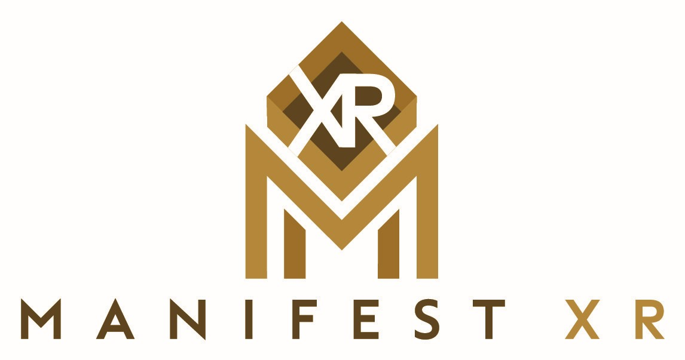

Prepared for: SAMAI 2 Programme
Platform: TASI Academy (powered by Manifest XR)
TASI Academy is the learning platform proposed for SAMAI 2. It delivers immersive, dual-language, assessment-ready training at scale. The platform supports the content types, interactivity, 1:1 support, and safety measures required by the programme. This addendum describes current platform capabilities, platform metrics and usage limits per tier, and alignment with the three-tier commercial structure (Essential Gateway, Catalyst, Vision 2030) at the stated scale (1M+ learners per year, up to 25,000 concurrent users).
The technical delivery is aligned with the three-tier model as follows:
| Tier | Programme investment | Cost per person per course | Technical specification |
|---|---|---|---|
| Essential Gateway | $12.99 million | $12.99 | High playback and cached learning content |
| Catalyst | $19.99 million | $19.99 | Mixed creation & consumption — balanced creation and consumption capabilities |
| Vision 2030 | $49.99 million | $49.99 | High content creation / prompting — advanced content creation, prompting, and applied AI development |
The Vision 2030 package includes all Essential Gateway and Catalyst capabilities, expanded webinar delivery, comprehensive regional promotional events, continuous programme iteration and improvement cycles, and adaptive updates reflecting global AI advancement. The metrics and limits in Section 9 reflect this tiered design.
Slides, audio, theory, and video are combined in a single lesson. Theory-heavy segments use slides + narration + Theory tab; applied demos use video; hands-on tasks use slides plus in-platform labs and simulations. Reinforcement uses quizzes and short reflection. The platform supports a unified learning object (video, slides, theory, quiz in one flow) and linking from video to specific slides or theory.
Scenario-based MCQs per unit module, with explanations and automatic grading, used for knowledge checks and final quiz (e.g. 40% of grade), with immediate feedback and band (Pass / Merit / Distinction).
AI-driven role-play (scenario, role, objective, multi-turn chat with the AI in character) for applied practicals (e.g. “Discuss with a simulated stakeholder,” “Justify your AI tool choice to a compliance officer”), assessing application and communication.
3D scenes clarify complex ideas (data flow, model vs user, agent loop) as environments, increase engagement, and provide workplace-like decision contexts. Thematic scenes support conceptual modules; custom 3D models support sector-specific scenes. Branching scenarios in 3D (decision points with consequences) and VR-ready consumption (e.g. WebXR) are supported where appropriate for the Vision 2030 tier.
Structured submissions (e.g. prompt + refinement + justification) are scored against rubrics. AI-assisted grading provides consistent, explainable scores; human moderation is used for borderline and flagged work. In-platform practicals, AI-answer detection, and human moderation support academic integrity. Scenario-based and justification-based tasks assess critical thinking.
Full dual language (EN/AR) with instant language toggle and RTL layout. Content and narration are generated and cached server-side in both languages to support scale (1M+ users/year, up to 25,000 concurrent) without per-user translation or TTS at runtime.
Meta-analyses show a significant positive impact on learning outcomes, with some studies indicating AI tutors can improve academic performance by up to 30% and double learning gains in less time than traditional methods.
Unit-aligned live sessions (demo, Q&A, sector spotlights); guest experts; recordings published as video lessons; in-session polls and quizzes feeding engagement analytics and optional participation scoring; post-webinar challenges linked to unit practical grade.
Per-unit or per-module forums; sector-specific threads; pinned “good examples”; AI-assisted first response (moderator-approved); “Solved” and “Good practice” badges and “Best of forum” feed.
Delivered capabilities include: dual-language pre-generated EN/AR narration; in-platform 3D in the lesson flow; simulation (role-play) as assessment; 1:1 chat and voice; AI-assisted rubric plus human moderation; adaptive path; “Explain my grade”; prompt playground with governance check;
The following metrics define the included usage and limits per participant per course, by tier. All figures are included entitlements within the programme; no additional per-user fees apply.
| Metric | Essential Gateway | Catalyst | Vision 2030 |
|---|---|---|---|
| Study Assistant (chat) messages per user per module | 200 | 500 | 1,200 |
| Max messages per single session | 20 | 40 | 80 |
| Live voice (1:1) minutes per user per course | — | 30 | 90 |
| Prompt playground / sandbox prompts per user per course | 100 | 400 | 1,000 |
| Max prompts per single practical or assessment | 15 | 25 | 50 |
| Metric | Essential Gateway | Catalyst | Vision 2030 |
|---|---|---|---|
| Slide / video replay | Unlimited (cached playback) | Unlimited (cached playback) | Unlimited (cached playback) |
| Simulation (role-play) attempts per scenario per user | 3 | 5 | 10 |
| Quiz attempts per lesson or module quiz | 2 | 3 | 5 |
| Final or unit quiz attempts | 2 | 3 | 5 |
| Narration replay (per slide) | Unlimited | Unlimited | Unlimited |
| Metric | Essential Gateway | Catalyst | Vision 2030 |
|---|---|---|---|
| Graded rubric-based practical submissions per user per course | 12 | 18 | 24 |
| AI-assisted rubric evaluations included per submission | 1 | 2 | 3 (including refinement loops) |
| 3D interactive sessions (distinct 3D lessons/scenarios) per user per course | _ | 12 | 20 |
| Forum posts (new threads + replies) per user per course | _ | 50 | 120 |
| Webinar live attendance slots per user per course | _ | 8 | 16 |
| Webinar recordings (on-demand) | _ | Unlimited access | Unlimited access |
| Metric | Value (all tiers) |
|---|---|
| Max concurrent users (platform) | 25,000 |
| Typical concurrent users (operational planning) | 1,500–1,700 |
| Peak concurrent users (completion periods) | Up to 16,000 |
| Session timeout (inactivity) | 30 minutes |
| Max session duration (continuous) | 4 hours (then gentle re-auth prompt) |
| Metric | Value (all tiers) |
|---|---|
| Completion flag per module / unit | Emitted for integration (e.g. AthkaX, SDAIA) for co-branded certificate issuance |
| Automated AI evaluation of assignments | Included for all rubric-based practicals at scale |
| Certificate / micro-credential issuance | Per unit and per competency as per programme design |
The platform is designed for 1M+ learners per year and up to 25,000 concurrent users. Content and narration are generated and cached server-side; critical paths are sized for the stated concurrency. Security, anti-cheating, accessibility, and governance (in-platform work, AI-answer detection, human moderation, rubric-based assessment) are built into the design. Completion flags and automated AI evaluation support co-branded certification and grading at scale. All features and metrics described in this addendum are ready for delivery and aligned with the SAMAI 2 curriculum, assessment model, and the three-tier commercial structure set out in the non-technical proposal.
The platform delivers each lesson through a combination of:
Slides, audio, theory, and video work together in a single lesson:
The platform supports a unified learning object: one lesson can combine video, slides, theory snippets, and quiz/assessment in a single flow. Video can be linked to specific slides or theory (e.g. timestamps) so learners can go deeper on demand.
Scenario-based MCQs are generated per lesson/module, with explanations and automatic grading. Optional visual context is supported. These are used for knowledge checks per module and for the final quiz (e.g. 40% of grade), with immediate feedback and band (Pass / Merit / Distinction).
AI-driven role-play is built in: scenario, role, objective, and multi-turn chat with the AI in character. It is used for applied practicals (e.g. “Discuss with a simulated stakeholder,” “Justify your AI tool choice to a compliance officer”), assessing application and communication as well as knowledge.
3D simulations and scenes are used to:
Thematic scenes (neural-core, molecule, solar-system) support conceptual modules; custom 3D models (GLB/GLTF) support sector-specific scenes (e.g. ministry building, control room, workflow). Branching scenarios in 3D (e.g. decision points with different consequences) are supported for critical thinking and application of the decision framework. The same 3D assets are structured so that VR-ready consumption (e.g. WebXR) can be offered where appropriate for the Vision 2030 tier.
Structured submissions (e.g. prompt + refinement + justification) are scored against rubrics with clear criteria. AI-assisted grading provides consistent, explainable scores; human moderation is used for borderline cases and flagged work, ensuring governance and fairness. In-platform practicals reduce cheating (work done inside the platform, not copy-pasted). AI-answer detection and human moderation support academic integrity. Scenario-based and justification-based tasks assess critical thinking.
Full dual language (EN/AR): Base content in English with a complete Arabic overlay (title, content, theory, slides, quiz, simulation). Instant language toggle is available in the player. RTL layout and translated assessments are supported so that every civil servant can learn in Arabic or English. Content and narration are generated and cached server-side in both languages; there is no per-user translation or TTS cost at runtime, enabling scale (1M+ users/year, up to 25k concurrent).
Study Assistant (live chat): An in-player text chat with a context-aware AI assistant (current course and lesson). It responds in the learner’s chosen language (EN or AR). Learners use it for 1:1 support (e.g. “How do I apply the decision framework here?” or “Explain chain-of-thought in this task”) without leaving the lesson. Live voice (Gemini Live): When the integration is enabled, the platform supports real-time voice sessions with the AI (speech-in, speech-out). This provides 1:1 voice coaching (e.g. practising explaining a prompt or justifying a tool choice aloud), supporting accessibility and higher tiers (Catalyst, Vision 2030). Live chat and 1:1 voice are both current platform capabilities used for direct learner support and engagement.
The platform supports live webinar integration for SAMAI 2:
Per-unit or per-module forums are supported (e.g. “Unit 1: Prompt Engineering”) for peer and facilitator discussion, sharing examples, and questions such as “Is this SDAIA-aligned?” Sector-specific threads (e.g. Health, Education, Municipal) support sector-tailored tips and scenarios. Pinned “good examples” allow moderators to surface strong prompt refinements (anonymised) as reusable patterns. AI-assisted first response can draft a short, SDAIA-aligned first reply for moderator approval, keeping tone consistent and response times short. “Solved” and “Good practice” badges and a “Best of forum” feed reinforce learning from the community.
The following capabilities are already implemented and position the platform ahead of typical industry offerings:
| Capability | Delivered benefit |
|---|---|
| Dual-language with pre-generated EN/AR narration | Full Arabic/English support with instant switch and no per-user translation/TTS cost at scale. |
| In-platform 3D scenes in the lesson flow | 3D is part of the same lesson and assessment flow, not a separate app. |
| Simulation (role-play) as assessment | Assesses application and communication, aligned with hands-on and sector scenarios. |
| 1:1 chat and voice inside the lesson | Context-aware support without leaving the lesson; supports UDL and andragogy. |
| AI-assisted rubric + human moderation | Scalable, explainable grading with human-in-the-loop for governance. |
| Adaptive path | Pre-assessment and in-module performance drive recommended path (e.g. extra practice or skip to advanced). Same curriculum, personalised journey. |
| “Explain my grade” | For each rubric criterion, learners can request a short, constructive explanation of their score from the same rubric logic. |
| Prompt playground with governance check | In-platform sandbox with a governance layer (e.g. checklist or light automated check) for data residency, bias, etc. before submission. |
| Anonymised peer comparison | After a practical, “Your approach vs typical approaches” (aggregate, anonymised) for reflection. |
| Micro-credentials per competency | Badges or micro-certs per competency (e.g. “Prompt engineering,” “Decision framework”) in addition to unit certificates; shareable (e.g. LinkedIn, SDAIA portal). |
| Immersive “decision room” (3D) | 3D “room” per unit with multiple decision stations; completing all unlocks the unit quiz. |
| Learner AI-use dashboard | Light dashboard of usage per unit (e.g. prompts, time in sandbox, attempts) for reflection and responsible use. |
| Regenerate narration | One-click re-generation of EN/AR slide narration (e.g. after content or wording updates) without rebuilding the full lesson. |
This addendum provides technical detail on how TASI Academy (Manifest XR delivery platform) supports the SAMAI 2 programme: immersive learning, hands-on practical training, safety and anti-cheating, and critical thinking assessment. It aligns with the three commercial tiers—Essential Gateway, Catalyst, and Vision 2030—and with the scale target of 1M+ users over 12 months and up to 25,000 concurrent users.
The SAMAI 2 curriculum is delivered as six units (or equivalent modular structure) with ≥60% hands-on practical and ≤40% theory/quiz, as agreed with SDAIA:
| Unit | Focus | Duration (indicative) | Theory vs Practical (design) |
|---|---|---|---|
| Unit 1 | Prompt Engineering & AI Tools | 3–4 hours | 40% theory / 60% practical |
| Unit 2 | Responsible AI and Compliance | 2–3 hours | 40% theory / 60% practical |
| Unit 3 | Creative Media and Content Creation | 3–4 hours | 40% theory / 60% practical |
| Unit 4 | AI Agents and Workflows | ~12 hours | 40% theory / 60% practical |
| Unit 5 | Vibe Coding Tools | ~4 hours | 40% theory / 60% practical |
| Unit 6 | Sector Application (Capstone) | 2–4 hours | 20% theory / 80% practical |
Design principles (from TASI Academy instructional design):Andragogy, cognitive load management, experiential learning, UDL (multiple representation, language, audio/visual aids, flexible access), pre-assessment, hinge questions, graded practical assignments, reflection/feedback, and unit completion certificates.
All applied labs and practical tasks are built and run inside the TASI Academy platform (not only external links). Practical work is distributed across the course (not only in a final capstone), with module-level post-assessments that count toward the final grade. This ensures that assessment is tied to immersive, platform-hosted practicals and can be combined with the safety and anti-cheating measures below.
TASI Academy delivers immersive, hands-on learning in the following ways:
| Capability | Description | Tier Availability |
|---|---|---|
| Structured labs | Step-by-step practical tasks (e.g. policy rewrite with prompting, executive summary from raw data, tool selection justification) hosted in TASI Academy. | All tiers |
| Guided prompt builder | In-platform interface for building and refining prompts (role, context, format, constraints) with immediate feedback. | Catalyst, Vision 2030 |
| Sandbox / simulated AI interaction | Simulated or API-backed AI interactions for chain-of-thought and refinement exercises within the platform. | Catalyst, Vision 2030 |
| Scenario-based selectors | Drag-and-drop and scenario selectors (e.g. latency vs reasoning, task matching) to apply the AI decision framework. | All tiers |
| Multi-turn refinement challenges | Documented refinement loops (initial prompt → feedback → improved output) submitted and assessed in-platform. | Catalyst, Vision 2030 |
| Sector-specific practicals | Same structure with sector-tailored scenarios (e.g. government, health, education) as per SAMAI 2. | All tiers |
| Capability | Description | Tier Availability |
|---|---|---|
| Dual-language (EN/AR) | All course content and narration available in English and Arabic; RTL support; server-side generation to limit per-user API cost. | All tiers |
| Narrated lessons | Pre-generated narration (EN + AR) for slide-based lessons to support accessibility and reduce cognitive load. | All tiers |
| 3D and visual assets | 3D visualisations and interactive scenes (e.g. conceptual and scenario-based) where pedagogically appropriate. | Catalyst, Vision 2030 |
| Simulations | Role-play and scenario simulations (e.g. decision-making, compliance, tool selection) inside the platform. | Catalyst, Vision 2030 |
| Desktop, tablet, mobile | Responsive access so that practicals and assessments can be completed across devices. | All tiers |
| Capability | Description | Tier Availability |
|---|---|---|
| One-to-one AI support agent | In-platform chat/agent to guide learners through the course and practicals without leaving TASI. | Catalyst, Vision 2030 |
| Professional forum | Integrated forum for peer support, sharing practice, and nationwide network (when enabled). | Vision 2030 |
| Hinge questions and reflection | In-module checks and reflection points to reinforce understanding and critical thinking. | All tiers |
Assessment is designed so that a substantial part of the grade comes from doing, not only from theory quizzes: Final assessment structure (example for Unit 1–style design):
Structured submission format: Participants submit in defined sections (e.g. Tool Selection Justification; Prompt v1; Refined Prompt v2; Final Output; Output Evaluation). This supports reliable, rubric-based scoring and anti-cheating analysis (see below).
TASI implements safety and anti-cheating so that assessment reflects genuine learner work and responsible use of AI.
TASI applies industry-aligned techniques to support integrity of written and practical work:
| Mechanism | Description |
|---|---|
| AI-generated text detection (indicative) | Use of statistical and classifier-based methods (e.g. perplexity, burstiness, existing detectors) to flag submissions that are likely AI-generated, for targeted human review rather than automatic fail. |
| Plagiarism and similarity checks | Comparison against known sources and other submissions to detect copying and recycled content. |
| Consistency with task and rubric | Automated checks that submissions address the specific prompt, use the required sections, and align with the rubric (reduces off-topic or outsourced answers). |
| Confidence flagging | Grading AI outputs a confidence level (e.g. High / Medium / Low) per criterion; low-confidence or borderline submissions are routed to human moderators. |
| Human-in-the-loop | Final fail or borderline decisions are not made by AI alone; flagged and sample submissions are reviewed by assessors, in line with SDAIA governance expectations. |
| Structured submission requirements | Mandatory use of templates and sectioned responses to reduce “paste-in” free-form essays that are hard to verify. |
| Mechanism | Description |
|---|---|
| Input screening | User inputs (e.g. prompts, forum posts) are screened for policy-violating or unsafe content before processing. |
| Output sanitisation | AI-generated content shown to learners is sanitised (e.g. PII redaction, safety filters). |
| Audit and logging | Security-relevant and assessment-relevant events can be logged for audit and review. |
| Governance alignment | Design and policies align with SDAIA governance and ethical AI use expectations. |
Assessment is designed to test critical thinking, not only recall or simple application:
| Approach | How it is implemented |
|---|---|
| Scenario-based questions | Quiz and practical tasks use realistic government/sector scenarios (e.g. “Select and justify an AI solution for a new public service portal”) so that reasoning and trade-offs are assessed. |
| Justification and reasoning | Tasks require written justification (e.g. decision framework application, tool choice, risk analysis), which is scored via criterion-based rubrics (e.g. “Decision Framework Application”, “Governance Awareness”, “Critical Evaluation”). |
| Refinement and improvement | Practicals require iterative refinement (e.g. prompt v1 → feedback → prompt v2 → final output), assessing ability to evaluate and improve AI outputs. |
| Critical evaluation of AI output | Dedicated tasks (e.g. “Critical Output Evaluation & Improvement Strategy”) where learners identify accuracy risks, hallucination risks, and governance exposure and propose mitigation strategies. |
| Application across contexts | Tasks are varied (e.g. policy drafting, data synthesis, tool selection, compliance) so that transfer of learning and context-appropriate reasoning are tested. |
| Rubric-based scoring | Each criterion (e.g. “Prompt Structure”, “Context Layering”, “Chain-of-Thought”, “Refinement Loop”, “Critical Evaluation”) is scored separately with rationale, making critical thinking dimensions explicit and auditable. |
The assessment model is designed to evidence deep learning and applied critical thinking rather than knowledge recall. Scenario-based tasks require learners to analyse realistic sector challenges, justify decisions, and apply structured frameworks, supporting higher-order cognition and knowledge transfer (Biggs & Tang, 2011; Bransford et al., 2000). Rubric-based evaluation makes reasoning explicit and measurable, strengthening reflective and self-regulated learning (Nicol & Macfarlane-Dick, 2006). Iterative refinement activities mirror real workplace practice and build expertise through feedback-driven improvement (Ericsson, 2006), while critical evaluation of AI outputs develops risk awareness and responsible decision-making aligned with future workforce skills (OECD, 2021). Together, these approaches ensure learners can confidently apply knowledge in complex real-world contexts, leading to stronger performance outcomes and practical professional capability.
| Item | Essential Gateway | Catalyst | Vision 2030 |
|---|---|---|---|
| SAMAI 2 full course (all units) | Yes | Yes | Yes |
| Dual-language (EN/AR) + narration | Yes | Yes | Yes |
| All in-platform practicals & labs | Yes | Yes | Yes |
| Assessment: quiz + practical (e.g. 40% / 60%) | Yes | Yes | Yes |
| AI-assisted rubric + human moderation | Yes | Yes | Yes |
| Anti-cheating & AI-answer detection | Yes | Yes | Yes |
| Critical thinking rubrics | Yes | Yes | Yes |
| Guided prompt building / sandbox | Limited / cached | Yes (capped) | Yes (high/uncapped) |
| 3D / simulations | Limited / pre-rendered | Yes | Expanded |
| One-to-one AI support agent | No | Yes | Yes |
| Professional forum | No | No | Yes |
| Live creation / prompting | Low (playback/cached) | Mixed (balanced) | High |
| Scale (1M+ users, 25k concurrent) | Yes | Yes | Yes |